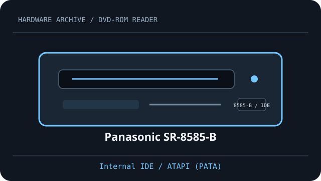

[ DVD-ROM READERS // IDENTIFIED MODEL ]
Panasonic SR-8585-B
Read-only DVD-ROM/video and CD media support. Ratings and host configuration below are specific to Panasonic SR-8585-B; match the full OEM suffix and firmware on the drive label.

IDENTIFICATION: Compare full model, suffix, OEM part number and firmware to the cited documentation before fitting, servicing or preservation reads.
Documented specifications
| Catalog subcategory | DVD-ROM readers (read-only class) |
|---|---|
| Exact model | Panasonic SR-8585-B |
| DVD read formats | DVD-ROM and DVD-Video |
| DVD read speed | up to 16×; maximum rating, not a sustained guarantee |
| CD read formats | CD-ROM and CD-DA (audio CD) |
| CD read speed | up to 40×; media and mode dependent |
| Interface | Internal IDE / ATAPI (PATA) |
| Bay and mechanism | 5.25-inch half-height tray-load bay; measure chassis depth, faceplate and mounting before installation. |
| Host compatibility | Requires a parallel-ATA host with ATAPI support and a standard 40-pin IDE connection. DVD-Video playback depends on compatible host decoding software and region settings. |
| Firmware, region and jumper caveats | Configure the rear Master/Slave/Cable Select jumper for the host cable arrangement according to the exact SR-8585-B manual and drive label. Firmware and DVD-Video region behavior are revision-specific; do not transfer settings from suffix variants. |
Host fit & preservation notes
- Requires a parallel-ATA host with ATAPI support and a standard 40-pin IDE connection. DVD-Video playback depends on compatible host decoding software and region settings.
- Configure the rear Master/Slave/Cable Select jumper for the host cable arrangement according to the exact SR-8585-B manual and drive label. Firmware and DVD-Video region behavior are revision-specific; do not transfer settings from suffix variants.
- Read ratings do not imply write support. Count recordable media only when this exact manual explicitly lists it.
- For imaging, record full drive label, OEM suffix, firmware, host controller, software, disc type and read errors; retain checksummed images and logs.
- Handle discs by edge or center hole; store in clean cases in cool, dry conditions away from direct sunlight. Avoid adhesives, abrasives and undocumented polishing/solvents.
Peak “×” read ratings are format-specific maximums, not guaranteed transfer rates.
Model documentation
- Panasonic SR-8585-B instruction manual (ManualsLib)Model-specific instruction manual for the SR-8585-B series; confirm exact suffix/revision on the unit.
- Panasonic SR-8585 user manual (Nodevice)Second hosted manual entry for the SR-8585 family; use the SR-8585-B instructions matching the drive label.